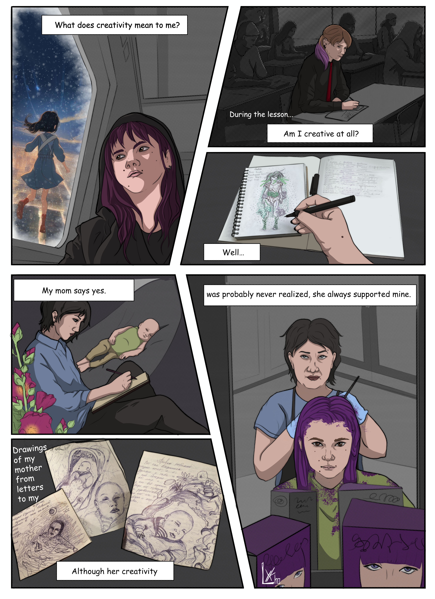
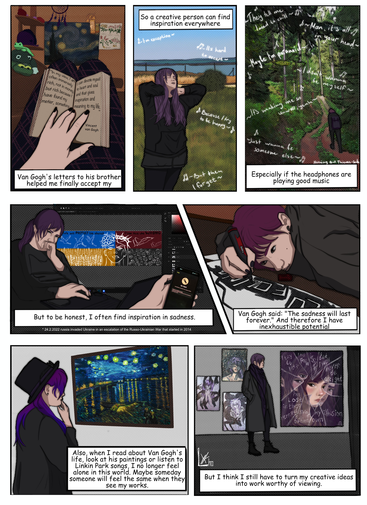
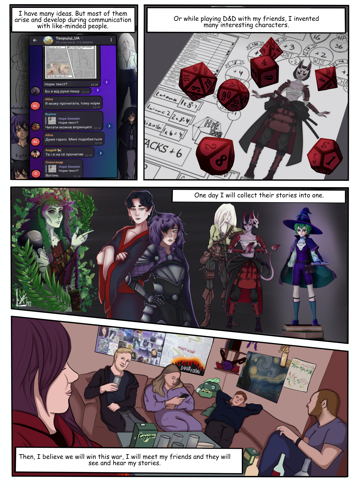

Kreativität
Dieser Comic entstand im Rahmen des Kurses „Kreativitätstechniken“ während meines Studiums der Medieninformatik an der Hochschule Flensburg.
Unsere Aufgabe war es, ein kreatives Profil zu erstellen und folgende Fragen zu beantworten:
- Was bedeutet Kreativität für mich?
- Was ist meine größte kreative Leistung?
- Was hilft mir, kreativ zu sein?
- Welche Person ist für mich ein Vorbild für Kreativität?
Die Ergebnisse habe ich in diesem Comic umgesetzt.


